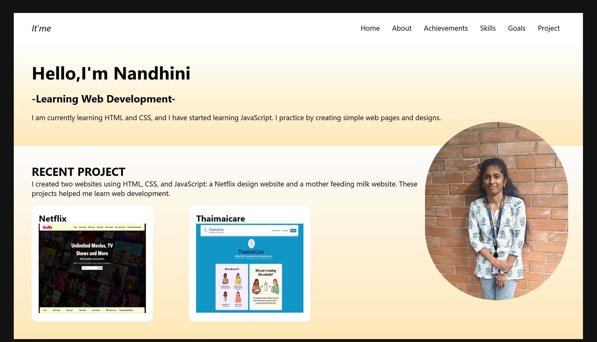

Netflix

I created a Nanflix website by replicating the Netflix app using HTML and CSS. This project focuses on designing the user interface, layout, and styling similar to Netflix. Through this project, I learned how to structure web pages, use CSS for design, and create a responsive layout. It helped me improve my front-end development skills.
Thaimaicare

Some mothers do not get enough milk for their babies for the first two or three months after delivery. At the same time, some mothers have more milk than needed. To help solve this problem, I created a website where these mothers can connect and support each other safely. This website helps share milk responsibly and supports babies who need proper nutrition.
Portfolio
I have created my own student portfolio website to showcase my skills and projects. In this portfolio, I included my personal details, education, skills, and projects that I built using HTML, CSS, and basic JavaScript. I worked on projects like a Nanflix website and a mother milk support website, which focus on real-life problems. This portfolio helped me present my learning journey and improved my confidence as a web developer.